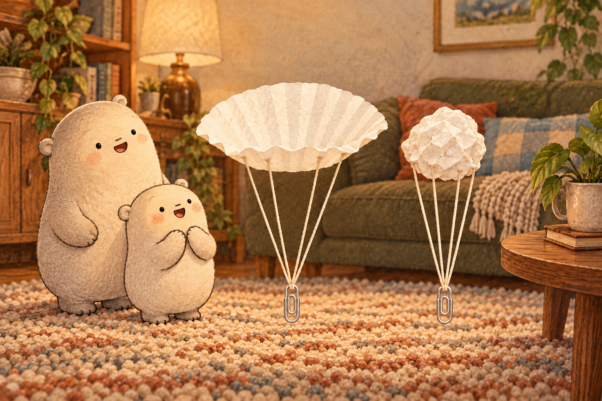
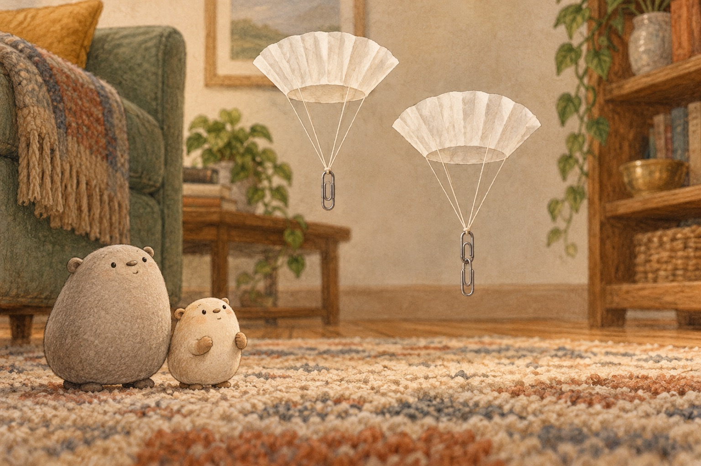
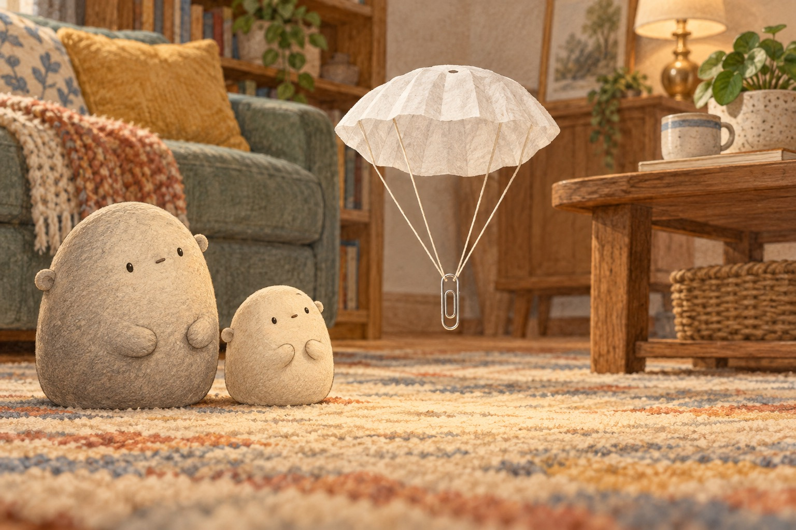
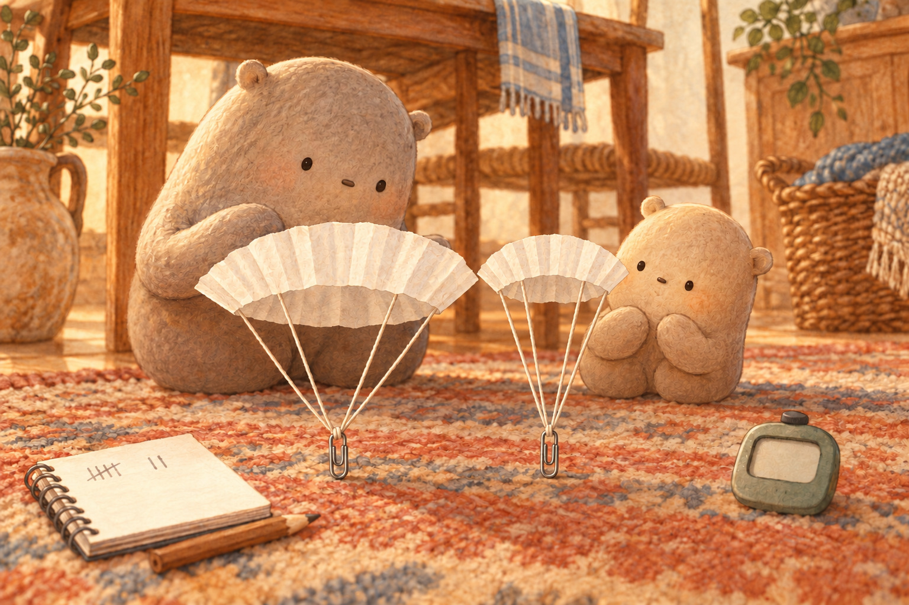
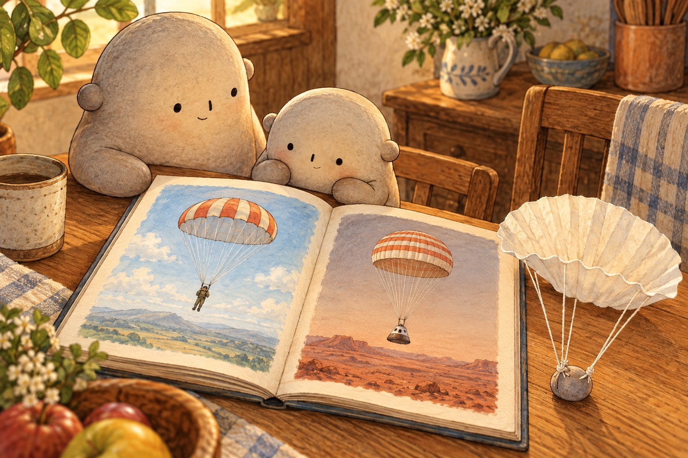

Why does a wide coffee filter parachute float down more slowly than a crumpled filter?
Where shall we look?
A wide canopy meets lots of air as gravity pulls the parachute down.
What slows the parachute?
Find the wide canopy above the hanging paperclip and notice the open space it covers.
A little explanation & something to try
Gravity pulls the parachute down. As it moves, tiny moving pieces of air push back. That air resistance, also called drag, slows the fall; it does not turn gravity off.
Try this. An adult stays beside you while you attach equal strings or yarn and a paperclip or small toy to a coffee filter. Ask that adult to use the scissors. Drop from standing height, or let the adult hold it higher. Never climb on chairs, stair railings, windows, or balconies.

The flat, wide filter has more surface area facing the air.
Why does the flat filter fall more slowly?
Compare the open, wide filter with the same kind of filter crumpled into a small shape.
A little explanation & something to try
The wide filter has more surface area facing the moving air. It catches more air and makes more drag, so it falls more slowly than the crumpled filter even though both filters weigh the same.
Try this. Drop one filter flat and the same filter crumpled. Count the fall time or use a timer, then open the filter and repeat.

A second paperclip adds weight, so gravity pulls down harder while the same canopy provides drag.
What changes when the load is heavier?
Look for one paperclip under one canopy and two paperclips under the matching canopy.
A little explanation & something to try
With the same canopy, a second paperclip adds weight, so gravity pulls down harder while the canopy area stays the same. In this test, that parachute usually descends faster. Without air, the extra paperclip would not make it fall faster.
Try this. Keep the filter and strings the same. Compare one paperclip with two paperclips over several drops.

A tiny top hole can let air through and reduce side-to-side wobble.
How can a tiny hole make the fall steadier?
Find the small centered hole and watch the canopy stay open with less side-to-side wobble.
A little explanation & something to try
A small hole at the canopy top lets some air flow through. That can keep air from spilling unevenly around the edges, so the parachute may wobble less.
Try this. Predict what a tiny centered hole will change. Test the uncut canopy first, then ask an adult to make the hole and measure several more drops.
Compare and round parachute measures
Compare test notes, then round measurements to the nearest ten.

A fair test changes one thing, repeats the drop, and measures what happens.
Choose one two-digit measurement from a new drop test. Compare it with another result, then round it to the nearest ten.
1. Across several drops, a crumpled filter floats for 28 counted seconds in all and a flat filter for 42. Put >, <, or = in the circle. What is the greater total?
28 ○ 42
A small hint
Compare tens first, then ones. The smaller total is written first, so the symbol opens toward 42. Then give the greater total.
2. One set of parachute strings is 76 centimeters long and another is 67 centimeters. Put >, <, or = in the circle. What is the greater length?
76 ○ 67
A small hint
Compare tens first, then ones. Write the symbol, then give the greater length.
3. Big and Little each record 48 test drops. Put >, <, or = in the circle. What is the shared number when the totals are equal?
48 ○ 48
A small hint
Compare tens and ones. When both totals match, use = and give that shared number.
4. The supply box holds 23 paperclips. What is 23 rounded to the nearest ten?
23 → nearest ten: ___
A small hint
Look at the ones digit. With 4 or less, round down to the ten before.
5. A piece of string is 57 centimeters long. What is 57 rounded to the nearest ten?
57 → nearest ten: ___
A small hint
Look at the ones digit. With 5 or more, round up to the next ten.
6. A safe standing-height drop is measured as 95 centimeters. What is 95 rounded to the nearest ten?
95 → nearest ten: ___
A small hint
A ones digit of 5 rounds up to the next ten.
Six clues in a slow fall
A Coffee Filter Parachute
A pull and a push
Big held the coffee filter open like a tiny canopy. Gravity pulled the parachute toward the floor. As it moved, tiny moving pieces of air pushed back. This air resistance, or drag, slowed the fall but did not stop gravity.
Which two forces act in different directions during the fall?
Wide meets more air
Little dropped the filter flat, then crumpled the same filter and dropped it again. Its weight had not changed, but its shape had. The wide filter showed more surface area to the air, made more drag, and floated down longer.
Why is shape—not weight—the best explanation for this result?
A heavier load
Next they kept the canopy and strings the same. One parachute carried one paperclip; another carried two. The second paperclip added weight, so gravity pulled down harder while the same canopy provided drag. In this test, that parachute descended faster. Without air, the extra paperclip would not make it fall faster.
What stayed the same, and what changed in the paperclip test?
A fair test
Big suggested a fair test: change one thing at a time. They predicted a bigger canopy would fall more slowly, then kept the weight and string length equal. They measured several drops because one wobbly fall could fool them.
Why did they keep the weight and strings equal and repeat each drop?
A tiny steadying hole
Sometimes the canopy rocked from side to side as air spilled unevenly around its rim. A small hole at the top let a little air pass through. The parachute wobbled less, so its path became steadier.
How can letting some air through reduce wobble?

From filters to landers
Their paper parachute was small, but its mechanism was real. Parachutes for people and space landers also spread a large canopy through air. Gravity keeps pulling down while drag pushes against motion, helping the load land more slowly.
What big idea do the model, a human parachute, and a lander parachute share?